Doble panel y marcadores
Dos carpetas a la vez, copiar y mover entre ellas, historial ‹ › y panel de marcadores al deslizar la barra inferior, con accesos directos en la pantalla de inicio.
v2.0.21 · Libre · Sin anuncios · GPLv3
Gestor de archivos de doble panel para Android, alternativa libre a MT Manager: terminal SSH con los archivos de tu servidor, lector de PDF, galería, herramientas APK, edición DEX/Smali y todo el control con root o Shizuku.
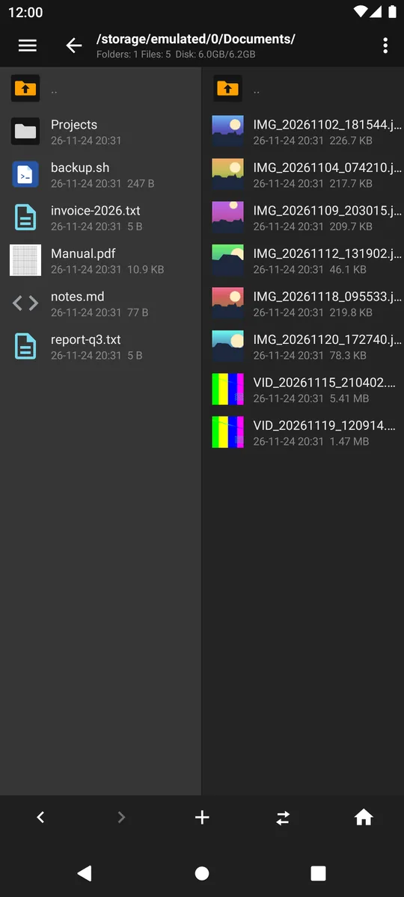
Las funciones principales se comprueban en un emulador real antes de cada versión.
Dos carpetas a la vez, copiar y mover entre ellas, historial ‹ › y panel de marcadores al deslizar la barra inferior, con accesos directos en la pantalla de inicio.
SSH y Telnet con claves, y los archivos del servidor por SFTP sobre la misma sesión: sin segundo inicio de sesión, y se recupera solo de los cortes de red.
Zoom de todo el documento con texto nítido, recuerda la última página de cada PDF, modo noche y sepia, y pantalla siempre encendida.
Fotos de 12 MP en mosaico con su rotación EXIF, vídeo 4K que se adapta a tu móvil y vista galería por carpeta con la resolución (4K, 2K, 1080p).
Editor DEX/Smali, descompilador JADX, editor HEX con inspector de datos, ARSC y AXML, Apktool y comparación de archivos.
Instalar APK y splits, AntiSplit, firmar con V1/V2/V3, generar claves, edición rápida de nombre, icono y paquete. Los APK de 1 GB se abren al instante.
Magisk, KernelSU, APatch y Shizuku. La protección Dead Man y DFRoot frena borrados masivos y escrituras en particiones antes de que pasen.
Para móviles con poca memoria: cachés mínimas, sin animaciones y miniaturas ligeras en caché solo si las quieres.
RAM real (PSS) de la app y de tus scripts sin root; con root, todos los procesos y qué está calentando el móvil: CPU, brillo, carga y GPU.
Gestiona los archivos del móvil desde el navegador del ordenador con un código, o comparte por FTP. También SMB, WebDAV y SFTP.
Oscuro estilo MT, AMOLED negro puro, claro y Material 3 con 19 colores de acento para día y noche.
Español, inglés, chino, ruso, portugués, indonesio y vietnamita: toda la app, también los avisos y los errores.
Cambia el aspecto con un toque en Ajustes → Apariencia. El modo AMOLED usa negro puro para ahorrar batería en pantallas OLED.
Desliza para ver cada zona. Toca una captura para verla en grande.
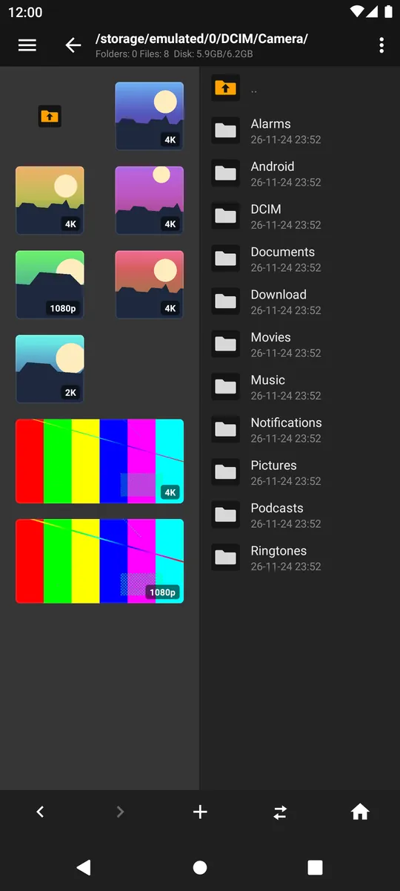
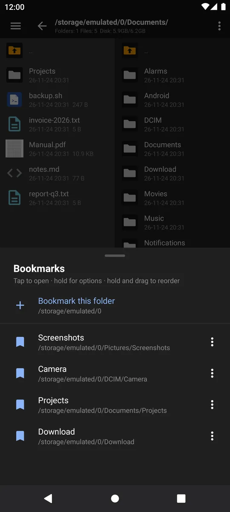
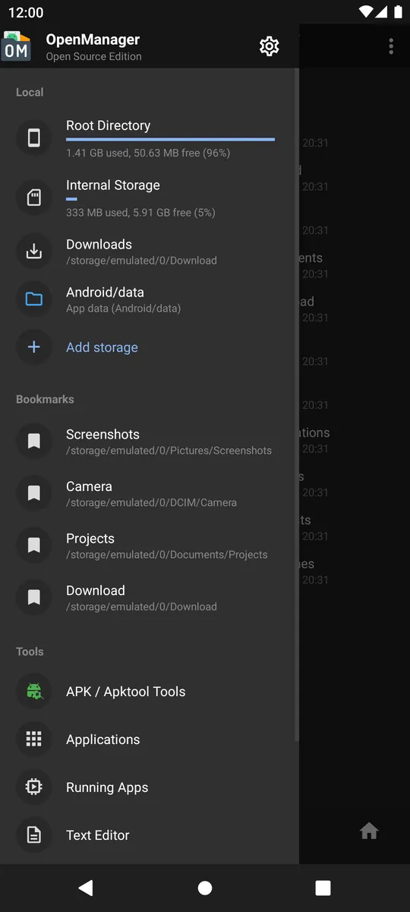
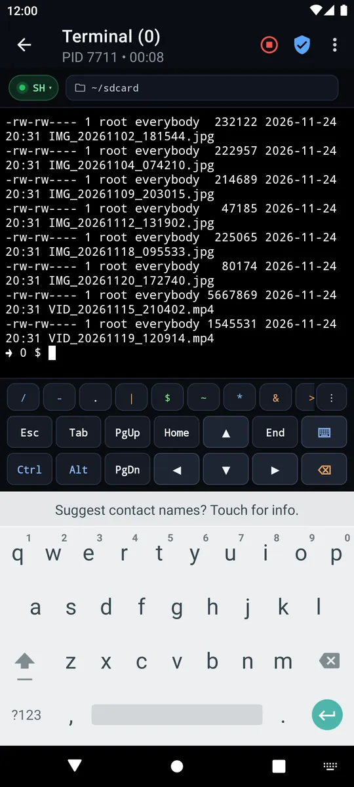
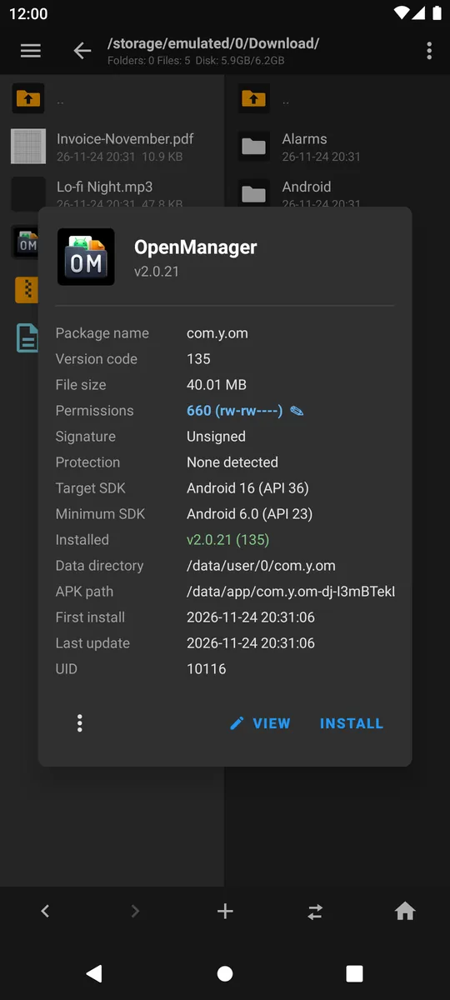
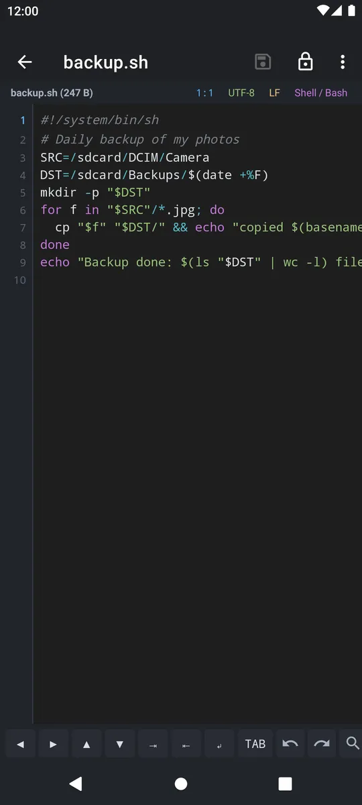
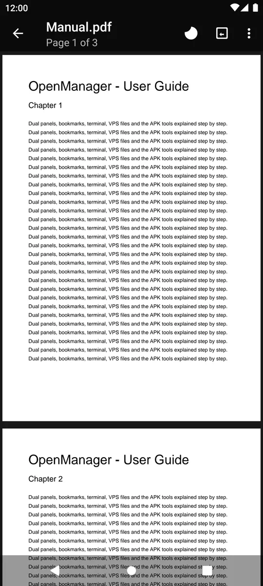
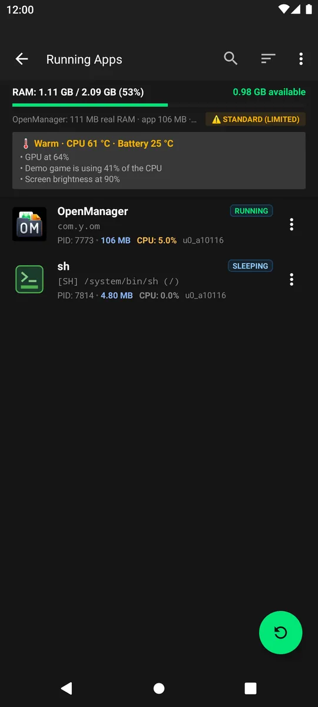
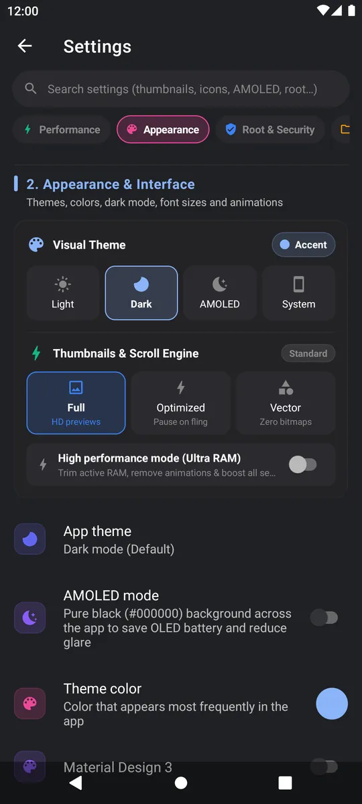
Cada texto nuevo llega en los 7 idiomas a la vez y un test impide publicar si falta alguno.
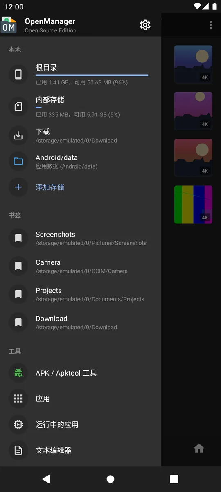
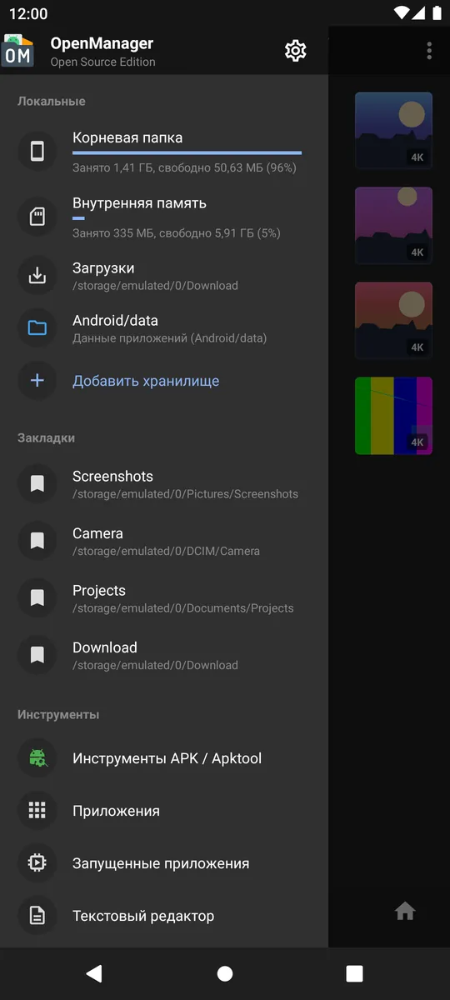
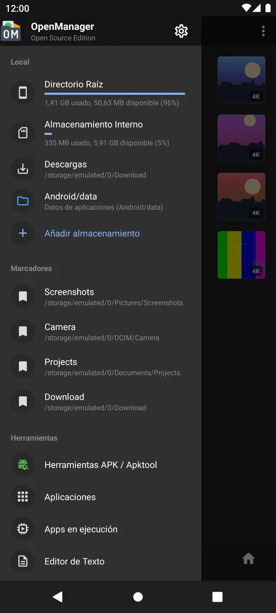
git clone --recursive https://github.com/uamo11/OpenManager.git
cd OpenManager
./gradlew assembleRelease